[35] [Thăng chức] Gia nhập Tà phái
Thăng chức lần 2 – Tà phái
Bước 1 Nhận nhiệm vụ tại Môn Chủ Huyền Bột
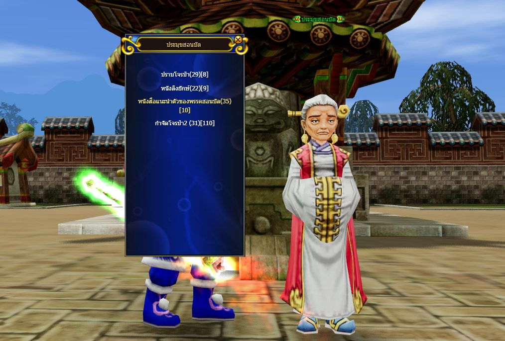
Bước 2 Tiêu diệt Sơn Tặc Cự Phủ, thu thập 10 Rìu Sơn Tặc
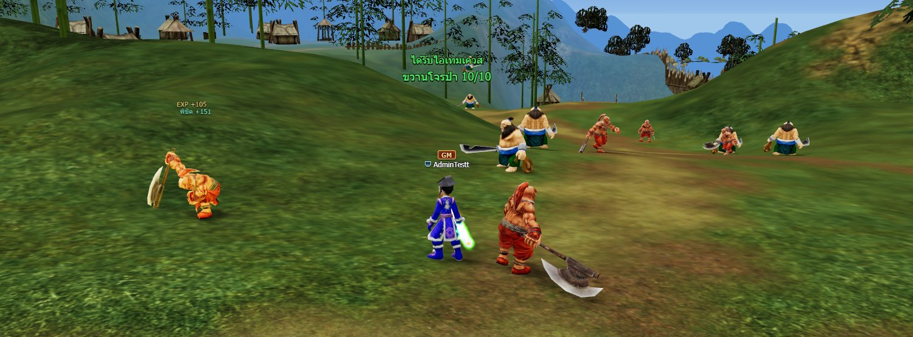
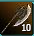 | Sơn Tặc Cự Phủ | x10 |
Bước 3  Mang Rìu Sơn Tặc giao cho Môn Chủ Huyền Bột
Mang Rìu Sơn Tặc giao cho Môn Chủ Huyền Bột
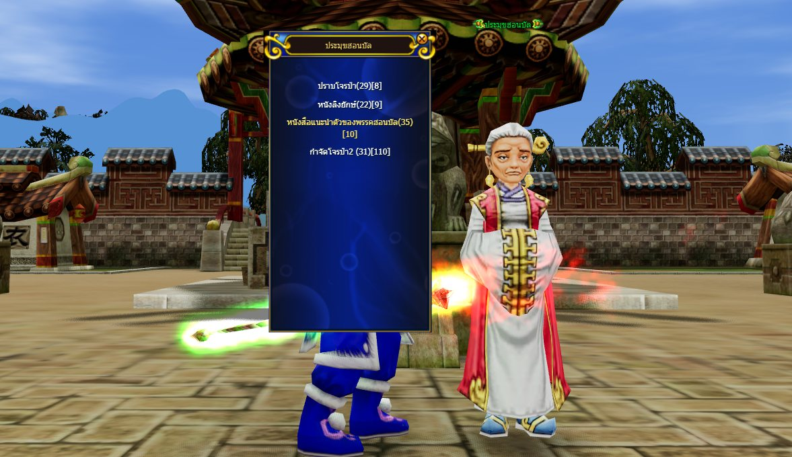
Bước 4 Mang Thư Tiến Cử giao cho Kim Hương Ngọc (1/5)
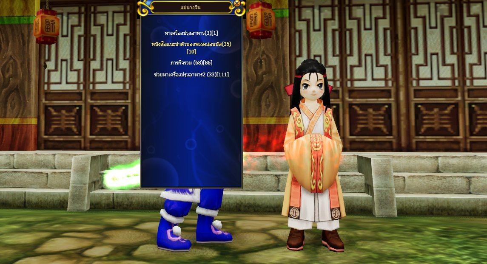
Bước 5
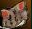
Mang Thư Tiến Cử giao cho Ngân Kiều Long (2/5)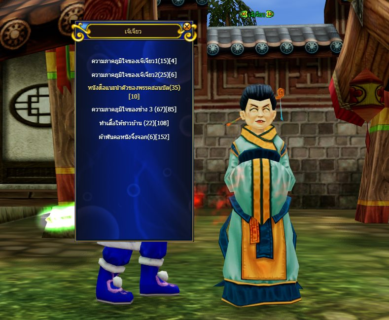
Bước 6 Mang Thư Tiến Cử giao cho Vi Đại Bảo
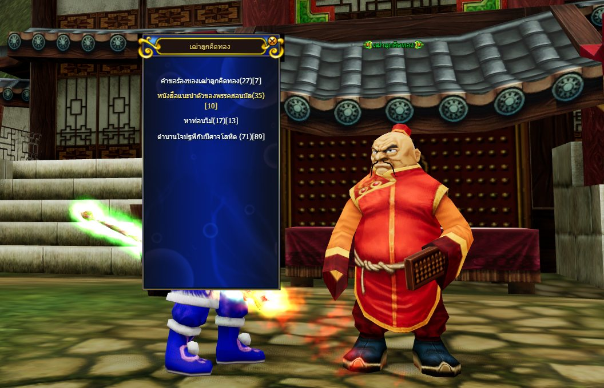
Bước 7 Tiêu diệt Sơn Tặc Cự Phủ hoặc Sơn Tặc Đầu To, thu thập 5 Tang Vật Sơn Tặc
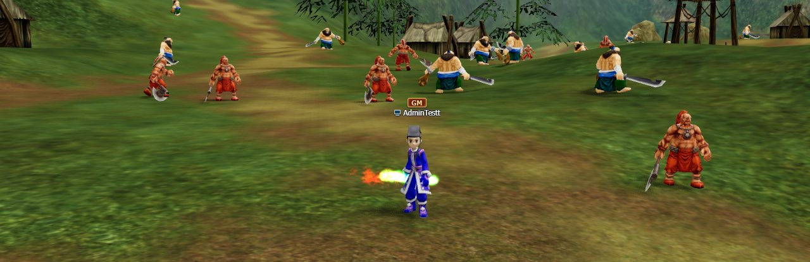
| Tang Vật Sơn Tặc | x5 |
Bước 8 Mang Tang Vật Sơn Tặc giao cho Vi Đại Bảo (nhận Thư Tiến Cử 3/5)
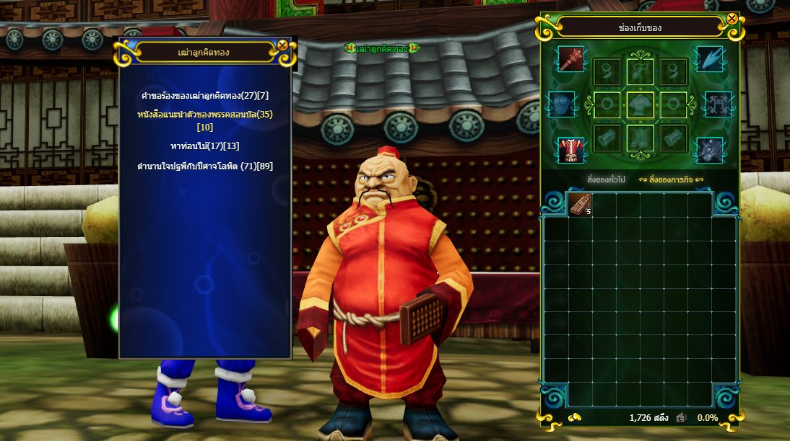
Mang Thư Tiến Cử 3/5 giao cho Đao Kiếm Tiếu (nhận Thư Tiến Cử 4/5)
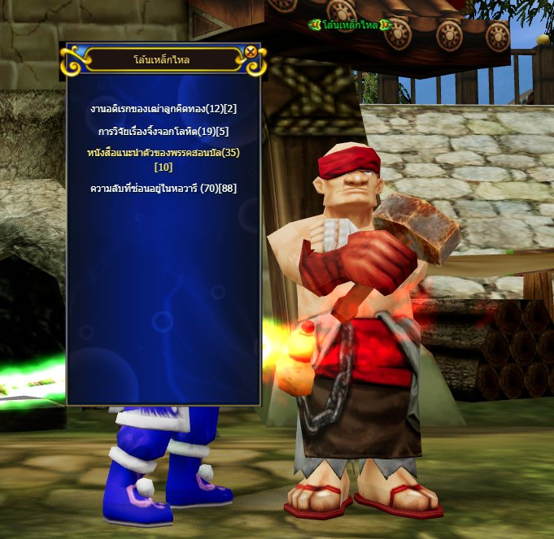
Bước 9 Mang Thư Tiến Cử 4/5 giao cho Bình Thập Chỉ (nhận Thư Tiến Cử 5/5)
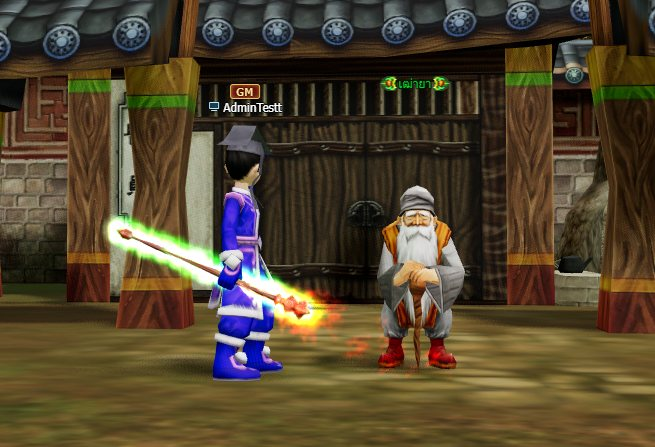
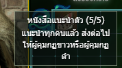
Bước 10 Mang Thư Tiến Cử 5/5 giao cho Ôn Hiểu Dư (phải cộng hết điểm khí công mới trả được)
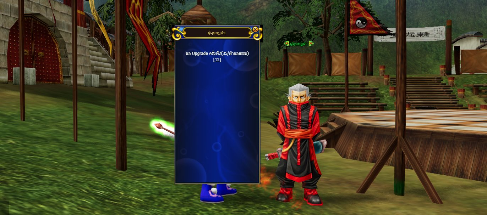
Bước 11 Nhận nhiệm vụ tại Quan Chủ Sí Quyên
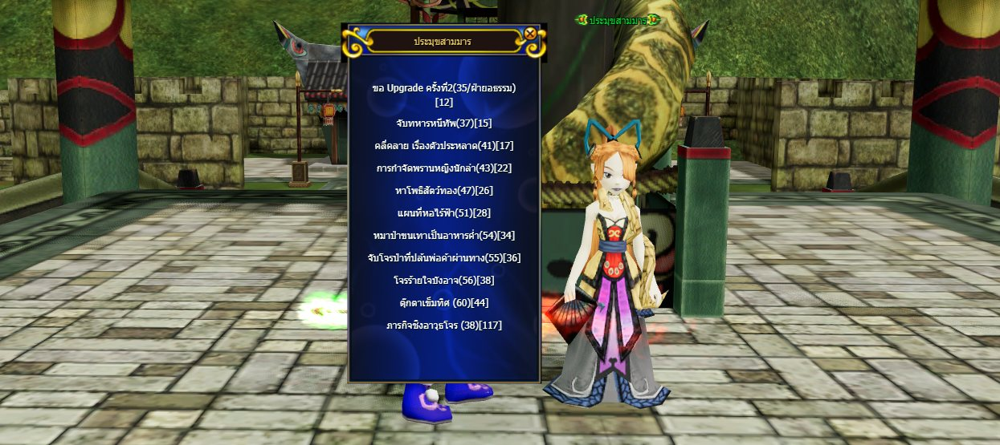
Bước 12 Tiêu diệt Huyết Hùng, Sơn Hoàng Hổ, Bạch Văn Hổ, thu thập mỗi loại 10 tấm da
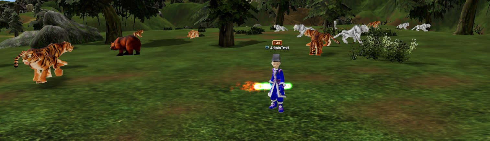
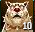 | Sơn Hoàng Hổ | x10 |
 | Bạch Văn Hổ | x10 |
 | Huyết Hùng | x10 |
Bước 13 Mang da thú giao cho Quan Chủ Sí Quyên
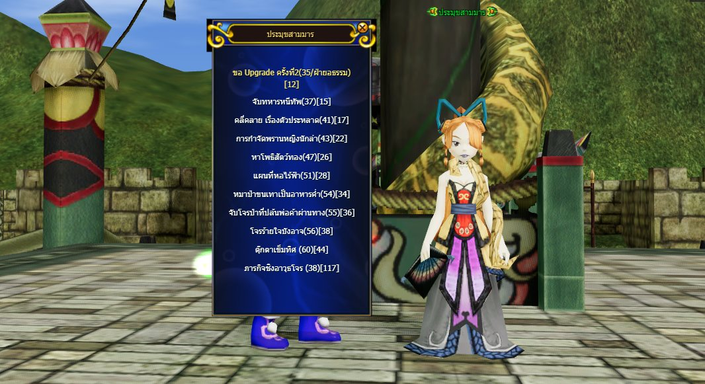
Bước 14 Nhận nhiệm vụ tại Lục Tiểu Hoàng
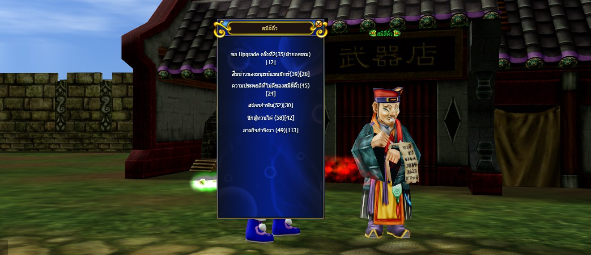
Bước 15 Nghe ngóng tin tức tại Châu Thúc Thông
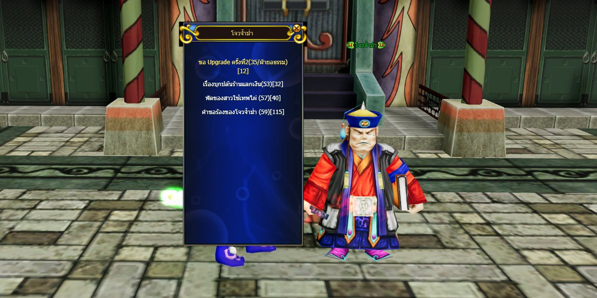
Bước 16 Gặp Quan Chủ Sí Quyên để nhận nhiệm vụ
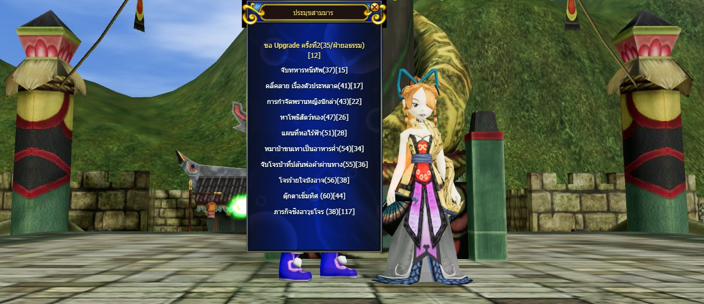
Bước 17 Gặp Ngân Kiều Long để đổi da lấy áo (nhận được Hộp Y Phục)
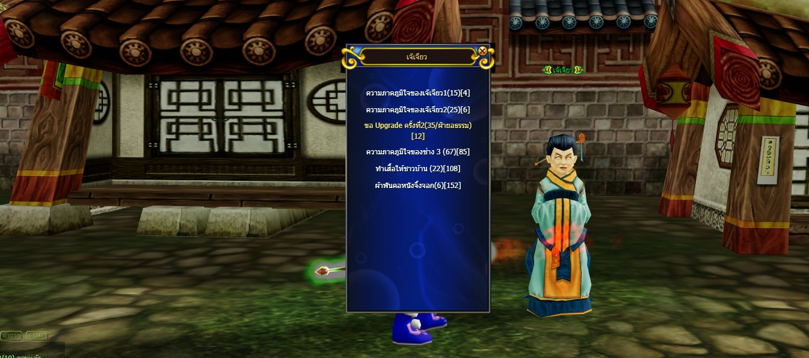
Bước 18 Mang Hộp Y Phục giao cho Vi Đại Bảo (
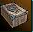
nhận được Hộp Gỗ)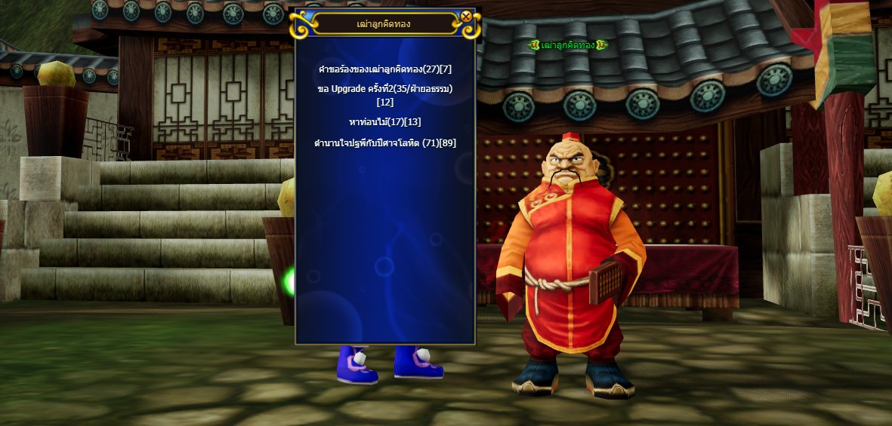
Bước 19 Mang Hộp Gỗ giao cho Quan Chủ Sí Quyên là hoàn thành
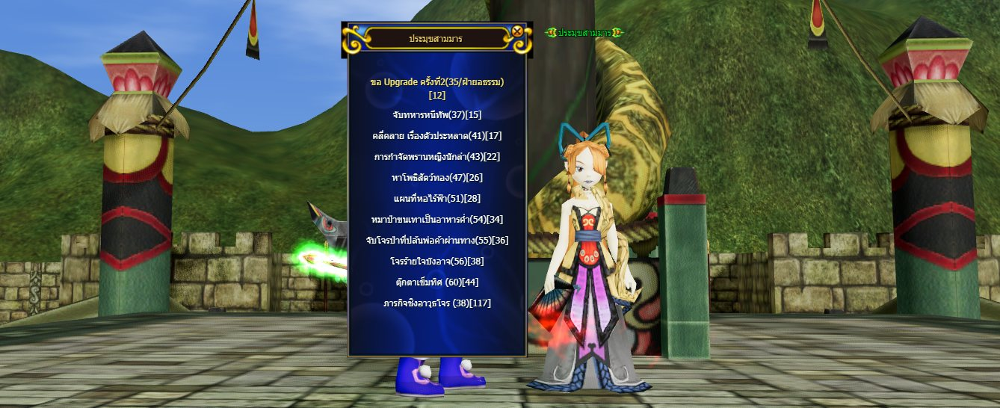
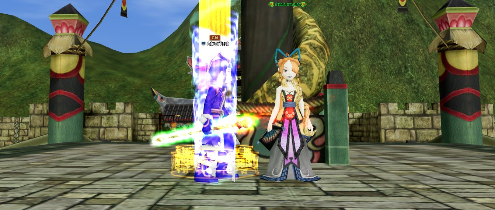